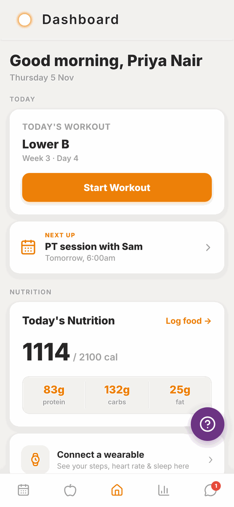

Totality for clients
Welcome to Totality
What Totality is, what you can do in it, and how to use this guide.
Totality is the app your personal trainer or gym uses to coach you. It is where you see your training programme, log your workouts, track your food, check in with your trainer each week, book sessions and classes, and pay your gym.
The client app is free for you. Your trainer or gym pays for Totality. You never need to buy a plan to use it as a client.

What you can do in Totality#
- Train. See the programme your trainer wrote for you, start a workout and log every set, rep and weight. A rest timer runs between sets.
- Track progress. Log your weight and body measurements, add progress photos and watch your strength go up on graphs.
- Check in. Once a week, tell your trainer how your week went. They reply right in the app.
- Eat well. Log your food by searching, scanning a barcode, or just telling Tali what you ate. Track water too.
- Book. See your PT sessions, book gym classes, and keep an eye on your session credits.
- Talk. Message your trainer or your gym directly.
- Pay. See your membership, save a card, buy from your gym's shop and find your receipts.
Who this guide is for#
This guide is for clients and gym members. If you are a personal trainer or you run a gym, you have your own guides on the help home page.
You do not need to be good with apps. Every page has pictures of the real screens, and big numbered steps you can follow one at a time.
Where to start#
- Read Your invite and first log in. It shows you how to open the email from your trainer or gym and set your password.
- Read Install the app to put Totality on your phone.
- Read First time setup. It walks you through the short set of questions the app asks the first time.
- Then have a look at Your Home screen. Everything starts from there.
The five buttons at the bottom#
Totality has five buttons along the bottom of the screen. They have pictures, not words:
| Picture | Takes you to | What is there |
|---|---|---|
| Calendar | Schedule | Your PT sessions, class bookings and session credits |
| Apple | Nutrition | Your food log for the day |
| House (middle) | Home | Today's workout, nutrition and everything else |
| Bar chart | Progress | Photos, measurements, weight and strength |
| Speech bubble | Messages | Chats with your trainer and gym |
A red number on the speech bubble means you have unread messages.
Getting help#
- Tap the purple question mark button on any screen to send us a problem report. See Troubleshooting.
- For anything about your programme, food targets, sessions or payments, message your trainer or gym. They set those up, so they can change them.
- For problems with the app itself, email admintotality@gmail.com.
Questions#
Do I have to pay for Totality?
No. The client app is free. Your trainer or gym pays for Totality. If your gym charges you for a membership or classes, that money goes to your gym, not to Totality.
Can I use Totality without a trainer or gym?
Totality is built for people who train with a coach or a gym. You get your account when your trainer or gym invites you. If you only want to track your food, have a look at Totality Nutrition instead. See Using Totality Nutrition too.
Does it work on my phone and my computer?
Yes. Totality works on iPhone, Android and in a web browser at totalityapp.com.au. You log in with the same email and password everywhere, and everything you log shows up on all of them. See Install the app.
Who can see my information?
Your trainer can see your training, check-ins, food logs and progress so they can coach you. If you are a member of a gym, the gym and its trainers can see your profile and training history. Totality staff do not coach you. See the Privacy Policy link at the bottom of your Home screen.
Why does my app look different from these pictures?
Some gyms add their own logo and colour to the app, so your buttons might be a different colour. You might also see fewer tiles if your trainer or gym does not use a feature, for example Classes only show if you belong to a gym.